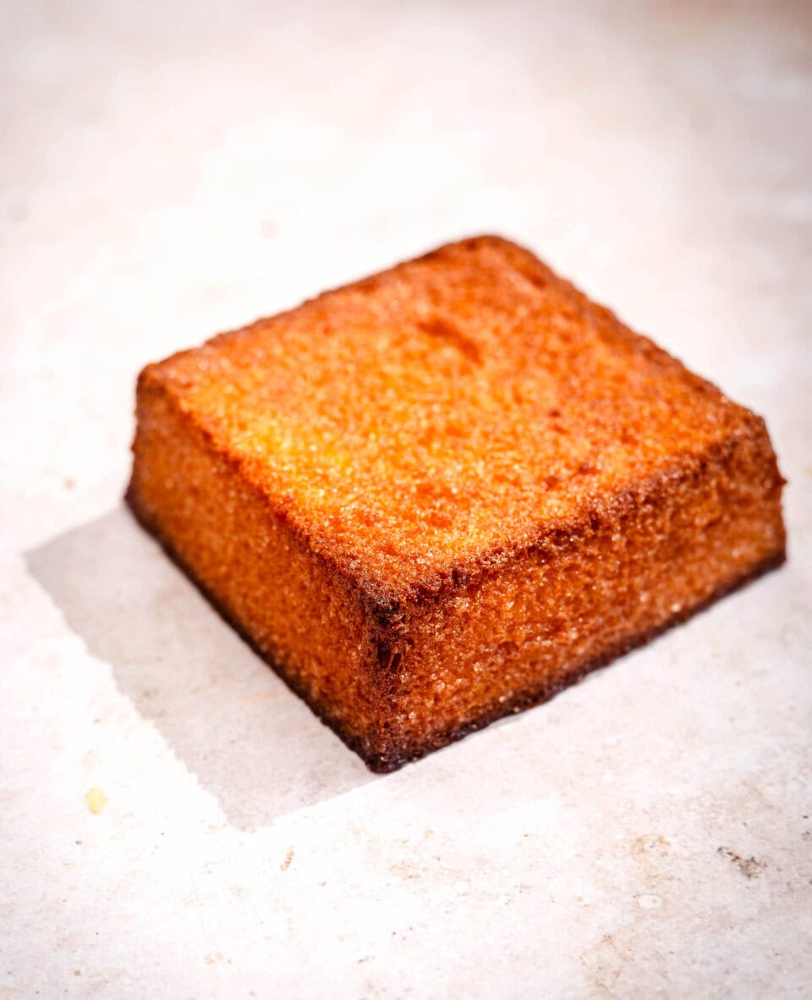

Golden Toast

Description
A simple yet perfect thick-cut toast, scored for extra crunch and finished with rich melted butter and a sweet drizzle of honey.
Ingredients
- Sliced bread (thick cut): 1 slice
- Butter: 10g
- Honey: To taste
Steps
- Preheat your toaster.
- Cut a shallow cross-hatch pattern into the surface of the bread.
- Toast for about 3 minutes until golden brown.
- Spread the butter while hot and finish with a drizzle of honey.
Home